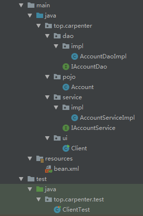
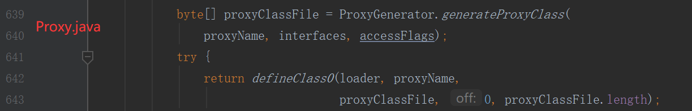
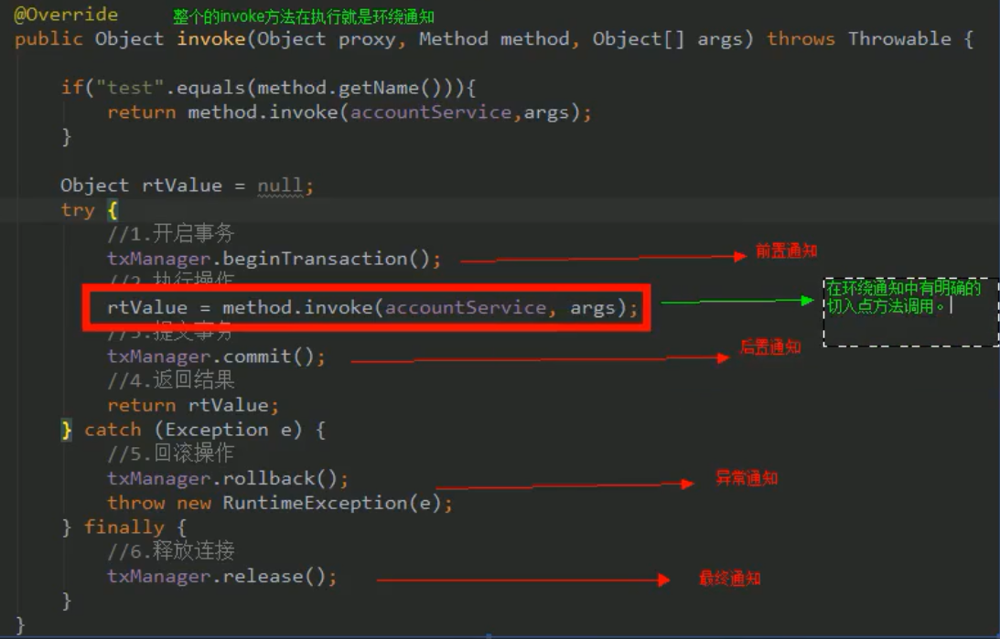
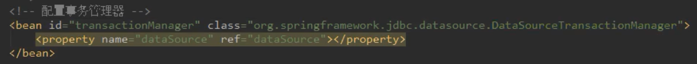
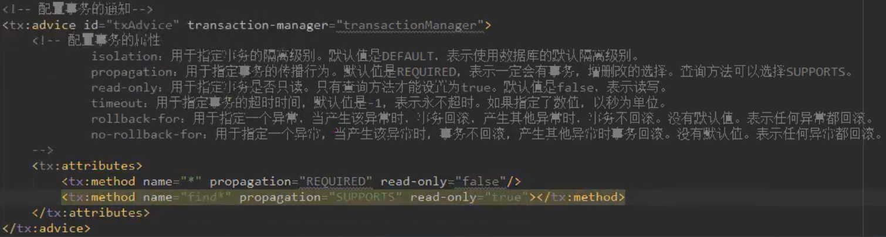
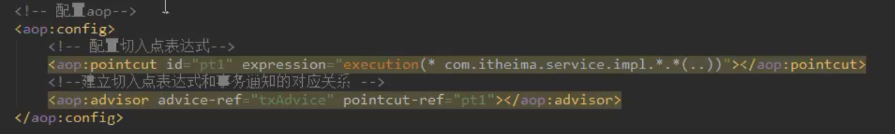

Spring FrameWork
6.AOP引入
6.1.环境准备——引出问题
sql
1 | CREATE TABLE table1 ( |

pojo.Account.java
1 | package top.carpenter.pojo; |
dao.impl.AccountDaoImpl.java
1 | package top.carpenter.dao.impl; |
dao.IAccountDao
1 | package top.carpenter.dao; |
service.IAccountService
1 | package top.carpenter.service; |
service.impl.AccountServiceImpl- 存在问题：大量【事务控制】的重复代码，引出问题
1 | package top.carpenter.service.impl; |
Client.java
1 | package top.carpenter.ui; |
bean.xml
1 |
|
pom.xml
1 |
|
6.2.代理前置知识
6.2.1静态代理
继承
- 代理对象继承目标对象，重写需要增强的方法
- 缺点：会代理类过多,非常复杂
- 日志子类 权限验证子类 运行时间计算子类
- 日志子类的权限验证继承类 权限验证子类的日志继承类 日志子类的运行时间计算继承类…
- …
聚合
- 【代理模式】
动态代理
本质：生成
.class字节数组，使用本地方法defineClass0生成class对象
特点：字节码随用随创建，随用随加载
作用：不修改源码的基础上对方法增强
基于接口的动态代理
- 涉及类：
Proxy - 提供者：JDK官方
- 创建代理对象要求：被代理对象至少实现一个接口，如果没有则不能使用【已经继承了Proxy 不能多继承】
- 如何创建代理对象：
Proxy类的newProxyInstance()ClassLoader- 用于加载代理对象字节码的，和被代理对象使用相同的类加载器。
- 固定写法：
被代理对象.getClass().getClassLoader()
Class[] interfaces- 是用于让反射得到的代理对象和被代理对象有相同方法
- 固定写法：
被代理对象.getClass().getInterfaces()
InvocationHandler：- 写具体如何代理，一般都是接口的实现类。通常情况下都是匿名内部类，但不是必须的
- 此接口的实现类都是谁用谁写
IProducer.java
1 | package top.carpenter.proxy; |
Producer.java
1 | package top.carpenter.proxy; |
Main.java
1 | package top.carpenter.proxy; |
可以将生成的Class对象保存下来
1
System.getProperties().put("sun.misc.ProxyGenerator.saveGeneratedFiles", "true");
1
2
3
4
5
6
7
8
9
10
11
12
13
14
15
16
17
18
19
20
21
22
23
24
25
26
27
28
29
30
31
32
33
34
35
36
37
38
39
40
41
42
43
44
45
46
47
48
49
50
51
52
53
54
55
56
57
58
59
60
61
62
63
64
65
66
67
68
69import java.lang.reflect.InvocationHandler;
import java.lang.reflect.Method;
import java.lang.reflect.Proxy;
import java.lang.reflect.UndeclaredThrowableException;
final class $Proxy0 extends Proxy implements IProducer {
private static Method m1;
private static Method m3;
private static Method m2;
private static Method m0;
// 唯一的一个构造方法 就是传入InvocationHandler
public $Proxy0(InvocationHandler var1) throws {
super(var1);
}
public final boolean equals(Object var1) throws {
try {
// protected InvocationHandler h; 解释了三个参数的由来
return (Boolean)super.h.invoke(this, m1, new Object[]{var1});
} catch (RuntimeException | Error var3) {
throw var3;
} catch (Throwable var4) {
throw new UndeclaredThrowableException(var4);
}
}
public final void saleProduct(float var1) throws {
try {
super.h.invoke(this, m3, new Object[]{var1});
} catch (RuntimeException | Error var3) {
throw var3;
} catch (Throwable var4) {
throw new UndeclaredThrowableException(var4);
}
}
public final String toString() throws {
try {
return (String)super.h.invoke(this, m2, (Object[])null);
} catch (RuntimeException | Error var2) {
throw var2;
} catch (Throwable var3) {
throw new UndeclaredThrowableException(var3);
}
}
public final int hashCode() throws {
try {
return (Integer)super.h.invoke(this, m0, (Object[])null);
} catch (RuntimeException | Error var2) {
throw var2;
} catch (Throwable var3) {
throw new UndeclaredThrowableException(var3);
}
}
static {
try {
m1 = Class.forName("java.lang.Object").getMethod("equals", Class.forName("java.lang.Object"));
m3 = Class.forName("top.carpenter.IProducer").getMethod("saleProduct", Float.TYPE);
m2 = Class.forName("java.lang.Object").getMethod("toString");
m0 = Class.forName("java.lang.Object").getMethod("hashCode");
} catch (NoSuchMethodException var2) {
throw new NoSuchMethodError(var2.getMessage());
} catch (ClassNotFoundException var3) {
throw new NoClassDefFoundError(var3.getMessage());
}
}
}
基于子类的动态代理
pom.xml
1 | <dependency> |
涉及类：
Enhancer提供者：第三方
cglib库创建代理对象要求：被代理类不能是最终类
如何创建代理对象：
Enhancer类的create()Class- 固定写法：
被代理对象.getClass()
- 固定写法：
Callback：- 提供增强代码
- 写如何代理，一般都是接口的实现类。通常情况下都是匿名内部类，但不是必须的
- 此接口的实现类都是谁用谁写
- 一般写的都是该接口的子接口实现类：
MethodInterceptor
Producer.java
1 | package top.carpenter.proxy; |
Main.java
1 | package top.carpenter.cglib; |
6.3.基于动态代理的问题解决
factory.BeanFactory.java——用于创建Service的代理类
1 | package top.carpenter.factory; |
AccountServiceImpl——文件变得清爽，问题解决
1 | package top.carpenter.service.impl; |
bean.xml——修改一下部分内容
1 | <bean id="proxyAccountService" factory-bean="beanFactory" factory-method="getAccountService"/> |
6.4.基于Spring框架中AOP的问题解决
@EnableAspectJAutoProxy (proxyTargetClass=true)——使用CGLib@EnableAspectJAutoProxy (proxyTargetClass=false)- 实现接口——JDK官方动态代理
- 不实现接口——使用CGLib
- 见7.2 & 7.3
7.AOP
AOP & SpringAOP
AOP是一种思想
SpringAOP是AOP的一种实现
同样，AspectJ是AOP的一种实现
Spring旧版有自己的AOP语法，但是非常复杂。
故：Spring借助AspectJ的语法(AspectJ的注解，故要导入AspectJ的Jar包)，但底层使用自己Spring实现
1
2
7.1.AOP基础知识
AOP：全称是Aspect oriented Programming面向切面编程，通过预编译方式和运行期动态代理实现程序功能的统一维护的一种技术作用：解决与主业务逻辑无关的横切性问题，把程序重复的代码抽取出来，在需要执行的时候，使用动态代理的技术，在不修改源码的基础上，对已有方法进行增强
优势
- 减少重复代码
- 提高开发效率
- 维护方便
与OOP对比，面向切面，传统的OOP开发中的代码逻辑是至上而下的，在这些至上而下的过程中会产生一些横切性的问题，这些横切性的问题和我们的主业务逻辑关系不大，会散落在代码的各个地方，造成难以维护，AOP的编程思想就是把业务逻辑和横切的问题进行分离，从而达到解耦的目的，使代码的重用性和开发效率高
应用场景
- 日志记录
- 权限验证
- 效率检查
- 事务管理
专业词汇
Joinpoint（连接点）- 被拦截到的点【如Service层的所有需要增强（目标对象）的方法】。在spring中，这些点指的是方法，因为spring只支持方法类型的连接点。
Pointcut（切入点）- 要对哪些Joinpoint进行拦截并增强【如Service层的需要增强的方法】，连接点的集合
Advice（通知/增强）所谓通知是指拦截到Joinpoint之后所要做的事情就是通知
- 增强的位置
- 增强的内容
通知的类型：
- 前置通知，后置通知，异常通知，最终通知
- 环绕通知

Introduction（引介）:一种特殊的通知。在不修改类代码的前提下，Introduction可以在运行期为类动态地添加一些方法或Field
1
2
3
4
5
public class UsageTracking {
(value="com.xzy.myapp.service.*", defaultImpl=DefaultUsageTracked.class)
public static sageTracked mixin;
}
Target（目标对象）- 被代理的对象
Weaving（织入）- 织入：目标对象的需要增强的方法变成代理对象的方法的过程
- 代理：目标对象变成代理对象的过程
- spring采用动态代理织入，而AspectJ采用编译期织入和类装载期织入
Proxy（代理）- 一个类被AOP织入增强后，就产生一个结果代理类
Aspect（切面）- 切入点和通知(引介)的结合
pom.xml
1 | <dependency> |
7.2.Spring中基于XML的AOP配置步骤
通知Bean也交给spring来管理使用
<aop:config>标签表明开始AOP的配置使用
<aop:aspect>标签表明配置切面id属性：切面唯一标识ref属性：通知类bean的Id
在
<aop:aspect>标签的内部使用对应标签来配置通知的类型<aop:before>：表示配置前置通知method属性：通知类中哪个方法是前置通知pointcut属性：切入点表达式，对业务层中哪些方法增强
- 切入点表达式写法：
- 关键字
execution(表达式)- 标准表达式：
访问修饰符 返回值 包名.包名.包名...类名.方法名(参数列表) - 访问修饰符可以省略：
返回值 包名.包名.包名...类名.方法名(参数列表) - 返回值可以使用通配符，表示任意返回值：
* 包名.包名.包名...类名.方法名(参数列表) - 包名可以使用通配符，表示任意包。但是有几级包，需要写几个*：
* *.*.*.类名.方法名(参数列表) - 包名可以使用..表示当前包及其子包：
* *..类名.方法名(参数列表) - 类名和方法名都可以使用*来实现通配：
* *..*.*(参数列表) - 参数列表可以直接写数据类型
- 基本类型直接写名称——
int - 引用类型写包名.类名的方式——
java.lang.String - 可以使用通配符表示任意类型，但是必须有参数
- 可以使用..表示有无参数均可，有参数可以是任意类型
- 基本类型直接写名称——
- 全通配写法：
* *..*.*(..) - 实际开发中切入点表达式的通常写法:
- 切到业务层实现类下的所有方法：
top.carpenter.service.impl.*.*(..)
- 标准表达式：
- 关键字
withIn以类作为控制粒度 - 关键字
args以参数作为控制粒度 - 关键字
@annotation以注解作为控制粒度 - 关键字
@withIn(X)以类是否加了X注解作为控制粒度 - 关键字
@args(X)以参数是否加了X注解作为控制粒度 - 关键字
this(X)是否是X的代理对象 - 关键字
target(X)是否是X的目标对象 - 上述所有的表达式在通知中可以混合使用
||&&
- 关键字
bean.xml约束
1 |
|
7.2.基于Spring框架中AOP的问题解决
7.2.1.基于前置 后置 异常以及最终通知的问题解决
Bean.xml
1 | ...约束头... |
AccountServiceImpl——同6.3无需更改
7.2.2.基于环绕通知的问题解决
Spring框架为我们提供了一个接口：
ProceedingJoinPoint该接口有一个方法
proceed()，此方法就相当于明确调用切入点方法该接口可以作为环绕通知的方法参数，在程序执行时，spring框架会为我们提供该接口的实现类供我们使用。
环绕通知：spring框架为我们提供的一种可以在代码中手动控制增强方法何时执行的方式。
bean.xml
1 | # 修改7.3.1中配置 |
TransactionManager——新增aroundTransaction()
1 | package top.carpenter.utils; |
7.3.Spring中基于注解的AOP
bean.xml
1 |
|
@Aspect——表示当前类是个切面类@Before——前置通知方法@AfterReturning()——后置通知方法@AfterThrowing()——异常通知方法@After()——最终通知方法@Around()——环绕通知方法@Pointcut——切入点表达式
7.3.基于Spring框架中AOP的问题解决
7.3.1.基于前置 后置 异常以及最终通知的问题解决[不建议使用 Spring框架存在一定bug]
bean.xml
1 | <!-- |
TransactionManager切面类
1 | package top.carpenter.utils; |
JoinPoint可以作为方法参数1
2
3
4
5
6
7
8("pt1()")
public void before(JoinPoint joinPoint) {
Object[] args = joinPoint.getArgs();
Object target = joinPoint.getTarget(); //top.carpenter.UserService1@79da1ec0
Object aThis = joinPoint.getThis(); //UserService1$$EnhancerBySpringCGLlB$$8fa9ac4d@2552
Object signature = joinPoint.getSignature(); //void top.carpenter.UserService1.print()
System.out.println("beginTransaction");
}
7.3.2.基于环绕通知的问题解决
bean.xml
1 | <!-- |
TransactionManager
1 | package top.carpenter.utils; |
ProceedIngjoinpoint继承了JoinPoint，proceed()这个是aop代理链执行的方法。- proceed()有重载，有个带参数的方法,可以修改目标方法的的参数
8.Sping事务控制API
8.1.明确前提
- JavaEE体系进行分层开发，事务处理位于业务层，Spring提供了分层设计业务层的事务处理解决方案。
- Spring框架为我们提供了一组事务控制的接口。这组接口是在
spring-tx-5.0.2.RELEASE.jar中 - Spring的事务控制都是基于AOP的
- 可以使用编程式事务实现【太麻烦】
- 可以使用声明式事务实现。重点是使用声明式事务实现
8.2.事务控制API
pom.xml
1 | <dependency> |
PlatformTransactionManager此接口是
Spring的事务管理器，提供了常用的操作事务方法void commit(TransactionStatus status)void rollback(TransactionStatus status)TransactionStatus getTransaction(TransactionDefinition definition)
开发中使用其实现类管理事务的对象
org.springframework.jdbc.datasource.DataSourceTransactionManager使用 SpringJDBC或iBatis进行持久化数据时使用org.springframework.orm. hibernate5.HibernateTransactionManager
使用Hibernate版本进行持久化数据时使用
TransactionDefinition- 事务的定义信息对象
String getName()——获取事务对象名称int getlsolationLevel()——获取事务隔离级【默认同数据库】int getPropagationBehavior()——获取事务传播行为int getTimeout()——获取事务超时时间boolean isReadOnly()——获取事务是否只读
- 事务的定义信息对象
事务的隔离级别
- 事务隔离级反映事务提交并发访问时的处理态度
ISOLATION_DEFAULT——默认级别，归属下列某一种ISOLATION _READ_UNCOMMITTED——可以读取未提交数据ISOLATION READ_COMMITTED——只能读取已提交数据，解决脏读问题(Oracle默认级别)ISOLATION_REPEATABLE_READ——是否读取其他事务提交修改后的数据，解决不可重复读问题(MySQL默认级别)ISOLATION_SERIALIZABLE——是否读取其他事务提交添加后的数据，解决幻影读问题
- 事务隔离级反映事务提交并发访问时的处理态度
事务的传播行为
REQUIRED：如果当前没有事务，就新建一个事务，如果已经存在一个事务中，加入到这个事务中。一般的选择【默认值】SUPPORTS：支持当前事务，如果当前没有事务，就以非事务方式执行(没有事务)
超时时间
- 默认值是-1，没有超时限制
- 如果有，以秒为单位进行设置
是否是只读事务
- 建议查询设置为只读
TransactionStatus- 此接口提供的事务具体的运行状态包含有6个具体的操作
void flush()——刷新事务boolean hasSavepoint()——获取是否是否存在存储点boolean isCompleted()——获取事务是否完成boolean isNewTransaction()——获取事务是否为新的事务boolean isRollbackOnly()——获取事务是否回滚void setRollbackOnly()——设置事务回滚
- 此接口提供的事务具体的运行状态包含有6个具体的操作
8.3.基于XML的实现
- 需要导入事务的的约束
1 |
|
配置事务管理器

使用
<tx:advice>标签配置事务的通知，以及配置的事务属性- 在
<tx:advice>标签内部- 属性
id：事务通知唯一标识transaction-manager：给事务通知提供一个事务管理器引用
- 属性

- 在
配置AOP中的通用切入点表达式，并建立事务通知和切入点表达式的对应关系

8.4.基于注解的实现
- 需要导入事务的的约束
- 配置事务管理器
- 开启Spring对注解事物的支持
1 | <!-- @EnableTransactionManagement 等价于 --> |
- 在需要事务支持的地方使用
@Transactional注解
8.5.事务的传播特性
[1]死活不要事务的 PROPAGATION_NEVER：没有就非事务执行，有就抛出异常 PROPAGATION_NOT_SUPPORTED：没有就非事务执行，有就直接挂起，然后非事务执行 [2]可有可无的 PROPAGATION_SUPPORTS: 有就用，没有就算了 [3]必须有事务的 PROPAGATION_REQUIRES_NEW：有没有都新建事务，如果原来有，就将原来的挂起。 PROPAGATION_NESTED: 如果没有，就新建一个事务；如果有，就在当前事务中嵌套其他事务。 PROPAGATION_REQUIRED: 如果没有，就新建一个事务；如果有，就加入当前事务 PROPAGATION_MANDATORY: 如果没有，就抛出异常；如果有，就使用当前事务。
9.面试
Spring 动态代理是如何实现的
为什么要使用 spring？
解释一下什么是 aop？
解释一下什么是 ioc？
spring 有哪些主要模块？
spring 常用的注入方式有哪些？
spring 中的 bean 是线程安全的吗？
spring 支持几种 bean 的作用域？
spring 自动装配 bean 有哪些方式？
spring 事务实现方式有哪些？
spring 的事务隔离？
原文作者: 掘金木匠
原文链接: http://goldcarpenter.github.io/2019/09/22/Spring_AOP/
版权声明: 转载请注明出处(必须保留作者署名及链接)